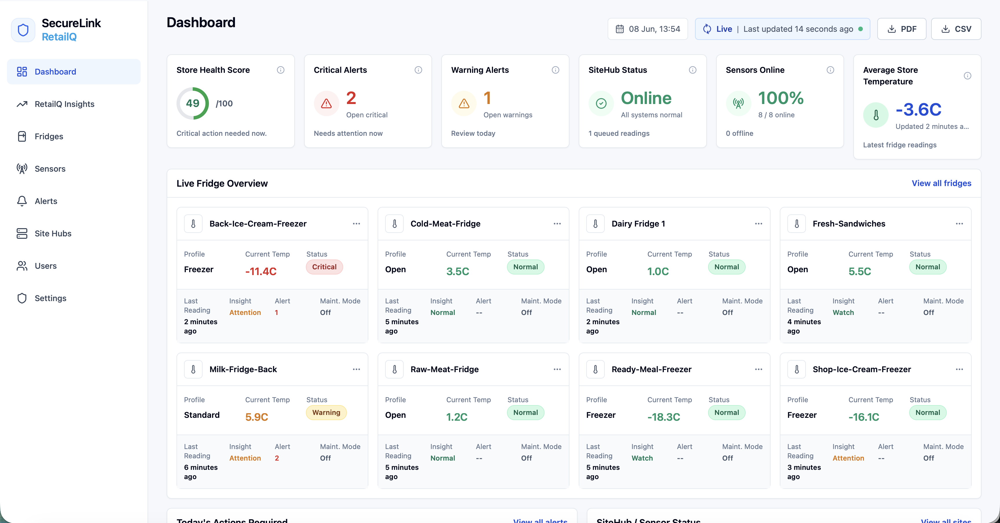

Temperature Monitoring
Keep clearer visibility of chilled storage temperatures and key readings.
Retail monitoring and commercial CCTV
SecureLink LTD combines professional CCTV installation with RetailQ, our retail monitoring solution for fridge temperatures, food safety checks, alerts and multi-site visibility.
We help food retailers, shop owners and commercial teams keep clearer oversight of sites, checks and security, using practical systems that are easy to understand and support.
RetailQ — retail monitoring and compliance visibility
RetailQ was created to help retailers gain better visibility of day-to-day operational checks without relying on paper records or manual processes.
Keep clearer visibility of chilled storage temperatures and key readings.
Support important store routines with easier-to-review check visibility.
Help owners and managers see key activity without chasing paper records.
Maintain a clearer view across one location or several sites.
Review alerts and reports so issues can be followed up sooner.
RetailQ dashboard
Monitor temperatures, review alerts and maintain operational awareness from a single platform.

Problems RetailQ solves
RetailQ features
Keep better visibility of chilled storage temperatures and review key readings from one place.
Support store teams with clearer visibility of important food safety routines.
Review alerts and reports so small issues can be spotted and followed up sooner.
Help owners and managers see what is happening across one or more locations.
Bring checks, readings and alerts into a clearer view for day-to-day decision making.
Built for Food Retail Environments
RetailQ roadmap
RetailQ is being developed to provide wider operational visibility, enhanced reporting and additional monitoring capabilities for retail businesses.
CCTV Services
SecureLink LTD also designs, installs, configures, integrates, supports and maintains CCTV systems for shops, offices, warehouses and commercial sites.
Professional CCTV design, installation and setup to help protect business premises, improve coverage and support faster incident review.
CCTV for entrances, tills, sales floors, storage areas and staff-only spaces to improve visibility and help reduce losses.
CCTV planning, installation and support for loading bays, storage rooms, vehicle areas, equipment zones and wider premises monitoring.
Professional CCTV setup for reception areas, access points, corridors and shared spaces to support safer working environments.
Remote access setup so owners and managers can check key areas when appropriate.
Practical setup and support for compatible mobile viewing apps, user access and day-to-day use.
SecureLink can install and configure CCTV systems with facial recognition capabilities where appropriate and legally compliant.
Installation and setup of CCTV systems capable of supporting automatic number plate recognition (ANPR) for car parks, yards, loading areas and access routes.
Setup and support for intelligent video search tools available on supported CCTV systems, helping teams review footage faster during investigations.
System checks, camera reviews, maintenance and practical support to keep existing CCTV systems performing properly.
Upgrade older cameras, recording equipment, remote access and compatible investigation tools on supported CCTV systems.
Clean cabling, planned camera positioning, recording setup, system integration and a professional handover.
Advanced CCTV options
Modern CCTV systems with facial recognition functionality, ANPR and intelligent video search tools can help businesses investigate incidents more efficiently, improve security and keep better visibility over key areas where the chosen system supports those features.
SecureLink LTD installs, integrates, configures and supports CCTV systems that may include video search, intruder identification, person tracking, vehicle recognition, ANPR and remote monitoring. Suitability depends on the premises, camera placement, selected CCTV system and the customer’s legal responsibilities.
Trust & Credibility
SecureLink LTD is ICO registered and supports responsible CCTV installation practices. Customers remain responsible for ensuring their own CCTV usage, signage and policies meet their legal obligations.
Contact SecureLink LTD
Send a quick enquiry and SecureLink LTD will review your details. The form opens your email app and prepares a message to our support inbox.
SecureLink LTD